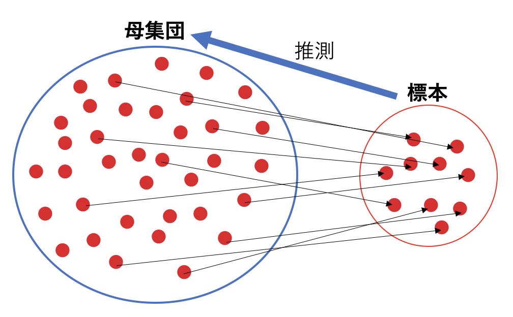

はじめに¶
まずは全体を俯瞰してみましょう。
統計とは？¶
統計とは、私たちの身の回りにたくさんあるデータに対して、何らかの手を加えることでそのデータから法則性を見出すものです。 そのデータの法則性から、その対象の集団にはどのような傾向があるのかを発見したり、これから起こることを予測したりすることができるようになります。
「何らかの手を加える」もので馴染みがあるものとして「平均値」「中央値」「最大値」「最小値」「最頻値」「分散」「標準偏差」などがあります。 これらを 要約統計量 と呼びます。これらの要約統計量を使用して、私たちはただデータを眺めて「〜っぽい」というような漠然とした答えを出すのではなく、 説得力のある客観的な答えを導き出すことができます。
また統計には 記述統計 と 推測統計 があります。
記述統計¶
記述統計は、調べたい対象の全てのデータを集めて分析します。調べたい対象全てのデータを集めることを全数調査と呼びます。 また全数調査による分析結果は当然 断定的 に解釈できます。
例：菊池研究室に所属している人の身長の平均を調べたい → 全員に身長を聞いて平均すれば良い
またその結果の平均身長は断定できます。
記述統計でよくあげられる他の例として、選挙の投票、クラスの試験の成績などがあげられると思います。
以上のように、記述統計は集めたデータ それ自体が分析対象 であり、結果も 断定可能 という特徴があります。
推測統計¶
では推測統計はどうでしょうか。推測統計は記述統計とは別の考え方をする必要があります。
記述統計は対象の集団全てのデータを集めて分析するのに比べて
推測統計は名前の通り、集められる一部のデータの特徴から、集められないデータ全体の特徴を 推測 する というものになります。
調べたい対象全体のことを 母集団 といい、 また、集められるデータの一部は 標本 と言います。
母集団全体を調べられない場合、母集団から標本を抽出して母集団の特性を推測します。
{kind=link}
例：日本の大学生の平均身長を調べたい → 日本の大学生全員から身長を聞くのは難しい → 一部の大学生の身長を集め、そこから日本の大学生全員の平均身長を推測
では、推測統計において分析した結果を記述統計の時と同じように断定的に解釈して良いのでしょうか。
答えは×です。
当然ながら、推測統計では母集団から抽出した一部を扱って分析することになるので 必ずしも母集団全ての情報を扱えるわけではありません。 それにより、結果も断定的に解釈することはできず、不十分さや不確実さがあります。 なので推測統計ではそのような 全ての情報を扱えない という状況を考慮し、 確率の理論を使用することでより普遍的な結論を導くことがゴールになります。
また推測統計には 推定 と 検定 に分類できます。 また推定では、さらに 点推定 と 区間推定 の二つがあります。
点推定：標本からピンポイントに母数の値を推定
例：早稲田大学人間科学部の生徒の平均身長は165cmくらいだろう
区間推定：標本から幅をもたせた母数の値の推定
例：早稲田大学人間科学部の生徒の平均身長は160~165cmくらいだろう
検定: 標本から得られる情報を利用し母集団に対するある仮説が正しいか正しくないかを判断する
例：早稲田大学人間科学部の男子生徒の身長の平均165cmと女子生徒の身長の平均163cmには差がある？ない？
これから行う回帰分析も、求めた回帰式の回帰係数について仮説を立てて検定を行なっています。 それでは回帰分析に進みましょう。